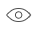

Year
Client
Project
-
2019 Cayas Identity, website Cayas is a beauty brand for the modern traveler. They make climate- and seasonally-specific skincare, aiming to make on-the-go self-care simple.UX: Nina Polson
Site Development: Elaina Polson


-
2019 Huffpost Highline Identity, editorialHuffPost Highline is a digital magazine of investigative journalism. Its stories are intended to change the way you see the world or influence the course of policy—stories that stay with you. As Creative Director, I updated the Highline brand identity and website experience, worked with internal teams to build audience engagement and accessibility, and oversaw art and design for our stories.Additional Creative Direction & Design: Kate LaRue
Editors: Greg Veis, Rachel Morris, Kate Rodemann
Photography: Finlay MacKay, Adrienne Grunwald
Illustration: Neal Fox
Development: Gladeye
Links: Obesity, Suicide 1, Suicide 2, Midwives


-
2018 Airbnb Vision work
-
2018 Condé Nast Traveler Vision workCondé Nast Traveler relaunched their website with a new approach to their content and a design refresh to go along with it. This vision work was used as inspiration for the internal team working on the redesign. Leveraging CNT’s incredibly rich content library, we married moments of bold imagery with subtle graphic details to design an experience meant to feel like a curated gallery of travel destinations.Creative Direction: Brooke Ellis
Links: CNT website, Editor's Note, TechCrunch Press


-
2018 BMW WebsiteBMW asked for an engaging experience that would inform potential customers about their 7 Series vehicles. Using narrative-driven content, subtle animation, and distinct photography, we built a section into their existing navigation that speaks to luxury, advanced performance, and their signature German engineering.Creative Direction: Conor Brady, Ryan Frank
UX: Jon Mok
Link: 7 Series website


-
2017 Mary Review Identity, magazineMary Review is a magazine of news and ideas written and produced entirely by women. Our goal was to bring parity to the wider journalistic conversation. Initially funded by Kickstarter, Mary grew from print and online content to events and fundraisers supporting women's rights affected by the political climate. As Design Director, I was responsible for the identity, print edition, website, editorial art direction, fundraising decks, marketing collateral, and overall brand aesthetic. In 2016, our website was selected for permanent inclusion in the Library of Congress Web Archives.Owner & Editor: Jillian Goodman
Photo Director: Leonor Mamanna
Illustration: Simone Noronha, Chloe Scheffe, Najeebah Al-Ghadban
Photography: Lauren Poor, Caroline Tompkins, Brea Souders, Alice Proujansky, Ashley C. Ford
Links: Mary Review website, NYT Press, Stack Press


-
2017 Clara Lionel Foundation Identity, websiteThe Clara Lionel Foundation (CLF) supports international education, health a class="eye"nd emergency response programs, and engages in global advocacy initiatives with the goal of improving the quality of life for children. It was founded by Rihanna in honor of her grandparents. In 2017, our team worked on repositioning the non-profit as a strategic organization with roots and momentum. We proposed ways in which the CLF team could engage Rihanna's fan base, and redesigned their website to foster engagement and individual donations. Our studio team shot 360 video footage and photography with Roc Nation in Malawi. As Art Director, I led the rebrand of the CLF identity, proposing a dynamic logo and visual system that mirrored the youthful energy of the children supported by the foundation.Creative Direction: Conor Brady
Design Team: Gabby Burleson, Andy Wong
Link: CLF website


-
2017 Marriott Magazine WebsiteMarriott Hotels repositioned themselves as an innovative travel company and launched a multi-channel campaign to communicate their new POV. We were tasked with creating a responsive website that could communicate their new brand positioning with content that can be repurposed and distributed throughout their digital ecosystem. We developed Marriott Magazine—a quarterly digital magazine catered to the modern traveler. We leveraged Marriott's brand recognition to book interviews with well-known people like Neil DeGrasse Tyson, and integrated quality video and photography assets by collaborating with existing partners TED and VSCO. The Wordpress-based solution was designed as a modular system of templates to maximize flexibility of content within their budget. Our team also found unique ways to integrate booking flows within each article type. As Art Director, I oversaw the design of the platform from concept to production.Creative Direction: Emil Lanne
Additional Design: Gabby Burleson
UX: Jon Mok, Evinn Quinn
Link: Marriott Magazine website


-
2016 Marriott Digital Website
-
2015 One Hundred Agency WebsiteOne Hundred is the world’s first multi-disciplinary, fully integrated service collective for the modern nonprofit. It’s a small group of agencies who combine their individual capabilities to do work for social change. Our team developed the website as a digital extension of the brand system Interbrand had designed.Creative Direction: Emil Lanne
UX: Jon Mok
Identity: Interbrand
Copy: Matt Gilbert
Link: One Hundred website


-
2014 North Identity, appNorth is a location-based mobile app that helps you discover meaningful places in nature through the stories of others. By aggregating locations and personal experiences from its users, North creates a curated database of places in nature from around the world. While we often fault the digital world for our lack of engagement with the outdoors, North explores how technology can be used to bring us closer to nature. This concept project was developed over one year and is comprised of a business plan, identity and visual design, experience design, pitch book, marketing materials, video, and a public pitch presentation as thesis requirements of the MFA Design Entrepreneurship program at the School of Visual Arts.Advisors: Steven Heller, Lita Talarico, Anthony D'Avella
Photography: Carina Skrobecki
Awards: Grand Prize, Media Segment, Adobe Design Achievement Awards, 2014; First Prize, Web & App Design,
Adobe Design
Achievement Awards, 2014.
Links: North website, North Tumblr